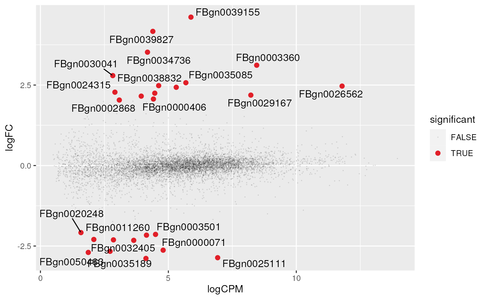

Manuscript code - differential transcript abundance
Stefano Mangiola
2020-09-20
manuscript_differential_transcript_abundance.RmdThis decument includes the code used for the manuscript, for the differential transcript abundance.
# Create a tt object with unique raw and normalised counts tt_scaled= tidybulk(tidybulk::counts, sample, transcript, count) %>% aggregate_duplicates() %>% identify_abundant() %>% scale_abundance() # Plot count densities tt_scaled %>% pivot_longer( c(count, count_scaled), values_to = "count", names_to = "Normalisation" ) %>% ggplot(aes(count + 1, group=sample, color=batch)) + facet_grid(~Normalisation) + geom_density() + scale_x_log10()

# Reduce data dimensionality with arbitrary number of dimensions tt_mds = tt_scaled %>% reduce_dimensions(method="MDS", .dims = 3) # Plot all-vs-all MDS dimensions tt_mds %>% pivot_sample() %>% GGally::ggpairs(columns = 10:12, ggplot2::aes(colour=condition))
# Adjust for visualisation tt_adj = tt_mds %>% adjust_abundance(~ condition + batch) # Visualise the association between reduced dimensions and factors tt_mds_adj_mds = tt_adj %>% filter( count_scaled_adjusted %>% is.na %>% `!`) %>% # Calculate reduced dimensions on the adjusted counts as well reduce_dimensions( .abundance = count_scaled_adjusted, method="MDS", .dim = 3 )
# Data manipulation and visualisation tt_mds_adj_mds %>% pivot_sample() %>% # First level reshaping pivot_longer(contains("Dim"), names_to = "Dim", values_to = ".value") %>% separate(Dim, c("Dim", "Adj"), sep="\\.") %>% mutate(Adj = ifelse(Adj == "y", "non", "adj") %>% factor(c("scaled", "adj"))) %>% # Second level reshaping pivot_longer(c(batch, condition), names_to = "covar", values_to = "which") %>% # Visualise the integrative plot ggplot(aes(y = .value, x = covar, fill = `which`)) + geom_boxplot() + facet_grid(Adj ~ Dim)

tt_test = tt_adj %>% test_differential_abundance(~ condition + batch) # MA plot tt_test %>% keep_abundant() %>% pivot_transcript() %>% # Subset data mutate(significant = FDR<0.05 & abs(logFC) >=2) %>% mutate(transcript = ifelse(significant, as.character(transcript), NA)) %>% # Plot ggplot(aes(x = logCPM, y = logFC, label=transcript)) + geom_point(aes(color = significant, size = significant, alpha=significant)) + ggrepel::geom_text_repel() + scale_color_manual(values=c("black", "#e11f28")) + scale_size_discrete(range = c(0, 2))

tt_test %>% # Select top genes and reshape data inner_join( arrange((.), PValue) %>% distinct(transcript) %>% head(6)) %>% # High level reshaping of the data. # All three count columns are shaped as two columns: # (i) the columns name and (ii) the value of those columns pivot_longer(starts_with("count"), names_to = "Stage", values_to = "count") %>% # This allows the faceted plotPlot ggplot(aes(x = Stage, y = count + 1, fill = condition)) + geom_boxplot() + facet_wrap(~transcript) + scale_y_log10()

# Heatmap tt_test %>% # Select differentially abundant filter(FDR < 0.05 & abs(logFC) > 2) %>% # Plot heatmap(sample, transcript, count_scaled_adjusted) %>% add_tile(condition) %>% add_tile(batch)